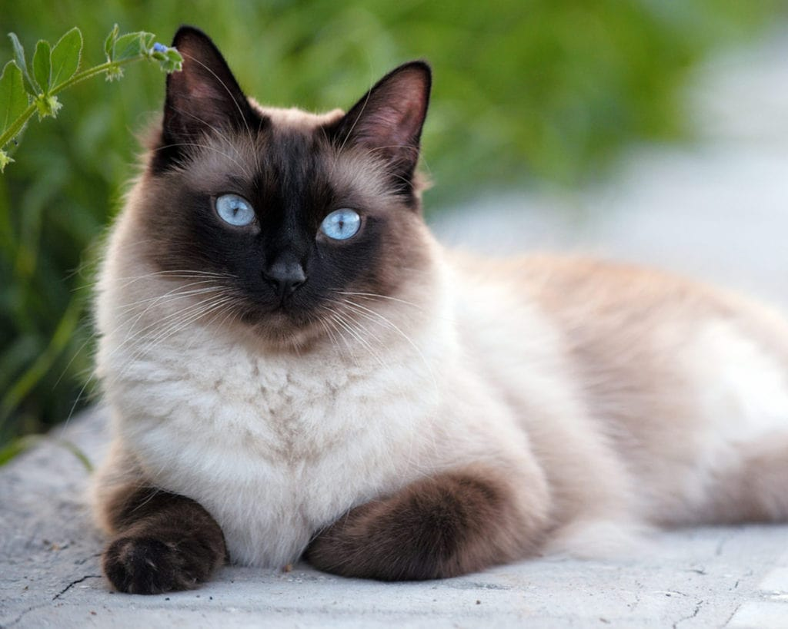
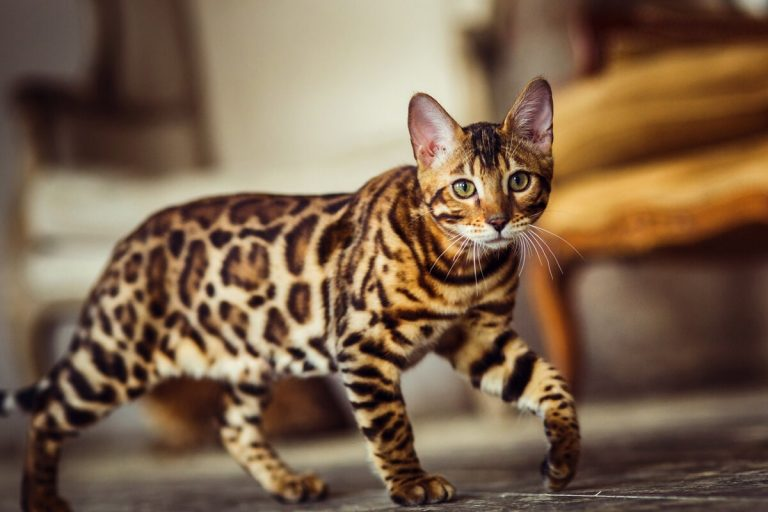
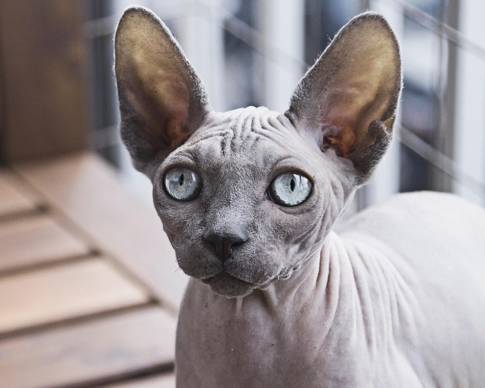

Сучасні коти світу
Кіт сві́йський, або кі́шка сві́йська — невеликий ссавець ряду хижих родини котових. Сучасна назва походить в
ід латинської назви catus, що використовується для свійського кота, на відміну від дикого, який латиною називаєтся felis.
Цікаві факти про котів
- Тривалість життя: 12 – 18 років (одомашнені)
- Період вагітності: 65 днів
- Маса: 4 – 5 кг (дорослі особини, свійські)
- Денний сон: 12 – 16 годин
- Довжина: 46 см (без хвоста)
Популярні породи котів
- Британська короткошерста

- Сіамська порода

- Бенгальська кішка

- Регдол

- Сфінкс
